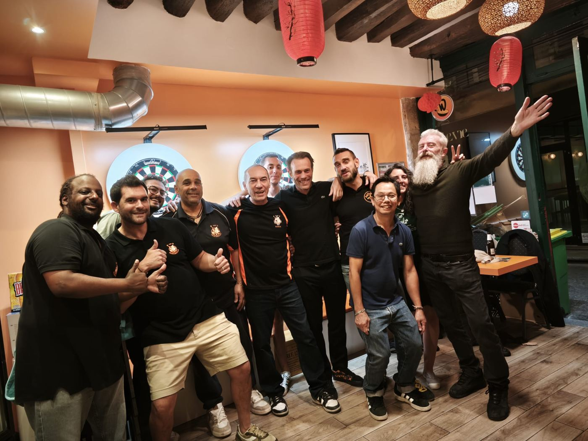
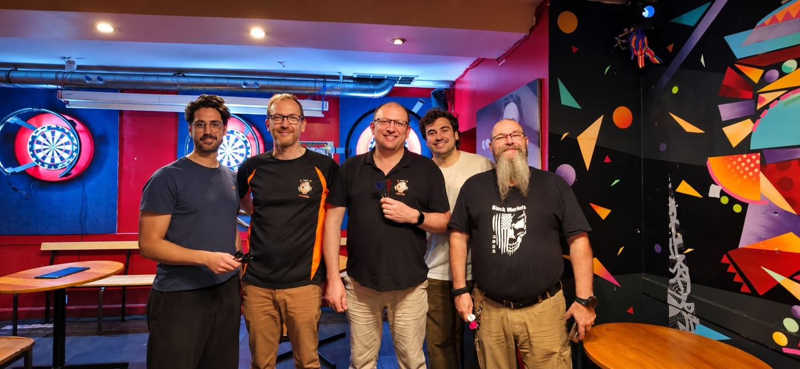
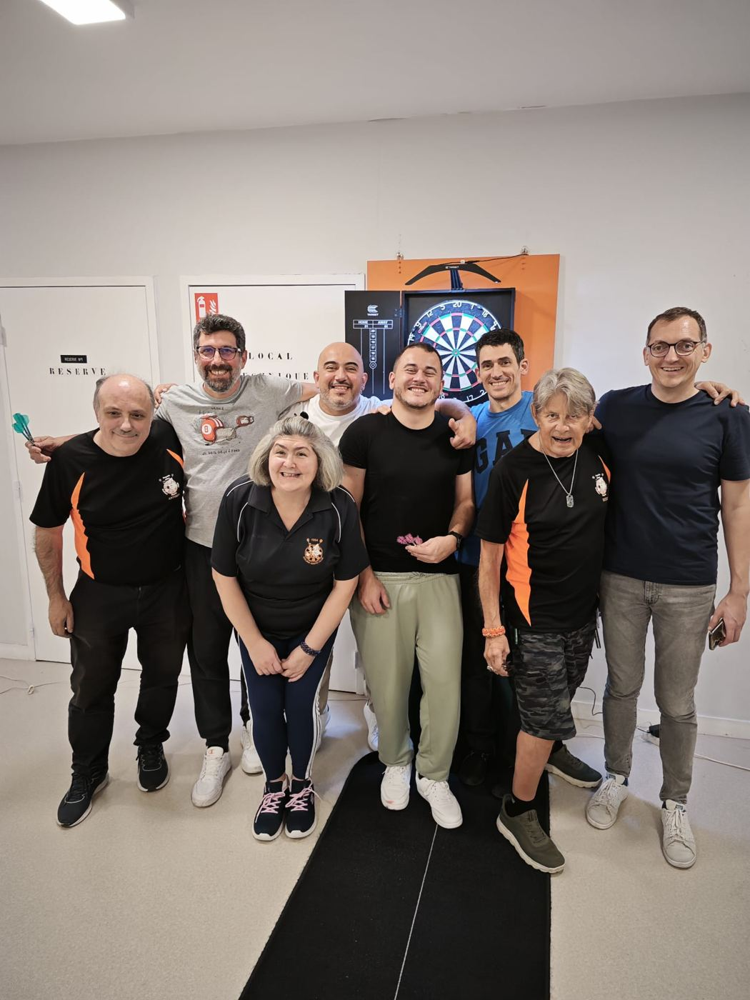

Club de fléchettes traditionnelles depuis 1984
Entraînements
Mardi
Jeudi
19h à 22h30
Entraînement ce soir !
Occasionnellement : club house du complexe sportif Marcel Bec, Meudon
Tournois
Prochaines rencontres Championnat CPARD
Derniers résultats Championnat CPARD
Actualités
Chargement…
Matchs en cours En direct
Chargement…



Rejoindre le club
Débutant ou confirmé, venez lancer quelques fléchettes avec nous. Une question ? Écrivez-nous.